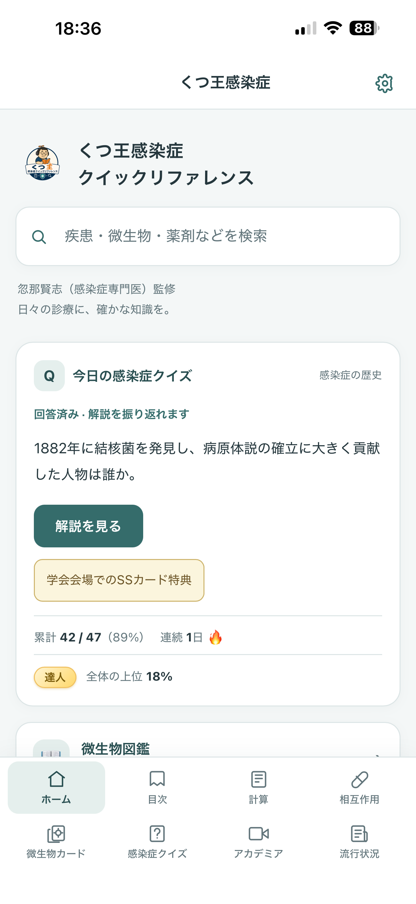

01 / REFERENCE
知りたい情報に、たどり着く。
疾患・症候、微生物、抗微生物薬など、感染症に関する内容を収載。検索と目次から、必要な項目を確認できます。
MEDICINE & LEARNING
医療の現場で必要な情報を探す。
日々の疑問を、次の学びにつなげる。
クツナックスは、感染症分野のアプリと
情報コンテンツを届けます。
忽那賢志（感染症専門医）監修

OUR APP
感染症診療の情報検索から、クイズによる学習まで。
必要な機能を、ひとつのiPhoneアプリに。
01 / REFERENCE
疾患・症候、微生物、抗微生物薬など、感染症に関する内容を収載。検索と目次から、必要な項目を確認できます。
02 / TOOLS
重症度評価などの計算・支援ツールと薬物相互作用チェッカーを搭載。日々の情報確認をサポートします。
03 / LEARNING
感染症クイズと解説、微生物カード、感染症を解説する動画を通じて、知識を深められます。
04 / SURVEILLANCE
新型コロナとインフルエンザの定点報告数を、全国と都道府県別に表示。感染症の流行を把握する手がかりにできます。
iPhone向けアプリ
医療従事者・感染症を学ぶ方へ
COMPANY
CONTACT
合同会社クツナックスやアプリについての
お問い合わせは、メールでご連絡ください。
アプリの操作方法、不具合、購入に関するご案内は
くつ王感染症クイックリファレンスのサポートページをご覧ください。